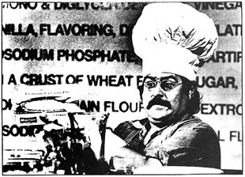

Marshall Efron demonstrates how you, too can make lemon cream pie without lemons and without cream. Photo/LNS,
A partial transcript of Marshall Effron's recent production on educational TV's THE GREA T AMERICAN DREAM MACHINE:'.
Here is a pie you can make with the same ingredients that the manufacturer uses and lists on the box. The same ingredients that I have right here. We'll make the crust first. Let's begin with some wheat flour. That's always good when you're making a crust. Just pour it right through the sifter and make sure that any dross or detritus is caught by the mesh of the sifter.
Now we're going to put some sugar in to make it sweet. Then a little shortening.
Now, to make it stay moist and loose you want to put some water in. And a little sweetening from our friend dextrose-hospital tested, hospital approved.
Now we want to mix a little sorghum flour with a little grain flour. There's some grain flour. Mix that around and put your sorghum flour in there too and just let it all go in. Make sure you're getting all the impurities out.
Okay, add a little dash of salt to give it some power and strength so it can stand there proud. Here's some sodium bicarbonate. And here's its antidote, ammonium bicarbonate. They think of everything don't they?
You might have some trouble finding these, but if you ask around, you might get these ingredients from some friends of yours, if you know any druggists or chemists. And what's a pie without a little artificial flavoring and coloring? Let's put it in there so it looks appetizing. That's fine. We'll just let that set chemically and heat up by itself and go over and make the body of the pie.
We're going to start with water. Just lay that water right in the bowl. And add some corn syrup. It's thick and it's sweet, and it's just fine. Lays right in there with the water. Great. Here's some shortening. You have shortening in both sides, in the crust and in the body. More sugar just to make it sweet.
And now we get to the interesting part. Here are whey solids. Lay that right in there. Mix it around. That's dairy-fresh, dairy-approved.
Now we're going to food starch modified. What are the modifications? No one knows, but they've been modified for some years. That sits in there. Makes it thick too.
More dextrose. More sweets behind the sweets. Here's some sodium caseinate. Remember the word "casein"? You see it in glue and paints. This is something different, though. It's a dairy product as well, and not bad for you nutritionally. That's good.
Now we come to an important part. Time to add the flavoring. This is what distinguishes our pies from other pies. It has a certain amount of flavor. That's good. Some gelatin to give that flavoring a little gush and make it stand tall and proud in the world of pies. Real gelatin.
Now we put some whole milk solids, also a very wonderful natural dairy item. That's good. Monosodium and diglyceride. This is an emulsifier to make it hang together. Hang together and stay sloppy in your tummy. Another dash of salt. Just a little. Just a dash, like snow. Isn't that pretty?
A taste of vinegar to give it that old tartness. But be careful you don't put too much vinegar in. If you do the kids will be turning their noses up at it, saying you make a vinegar pie, and you don't want to do that.
Polysorbate number sixty. Not fifty-eight or fifty-nine or sixty-one. If you have trouble finding this, your local organic chemical supply house will probably have a little for you. This is an emulsifier and it also retards spoilage. So many pies these days are spoiling right and left. This one doesn't spoil after you keep it for seven or eight months.
Here's some vanilla to counteract the vinegar and add a little more flavoring. That's fine. And our old friend monosodium phosphate. Can be found in laxatives and detergents. Cleans all kinds of tubes out and you'll have a clean pie. We'll just lay this in right here. You don't want to put in too much. Acts like Drano or something.
And what's a pie without a little artificial color? Just a couple drops. Not too much. You don't want it to clash with the walls or the curtains.
You may wonder what kind of pie we've made here. I'll show you exactly what kind of pie it is. There it is. A modern lemon cream pie. I'll open it for you. Get it out of the box. Good. Factory-fresh, factory approved. No lemons, no eggs, no cream. Just pie.
|
 |
|
|